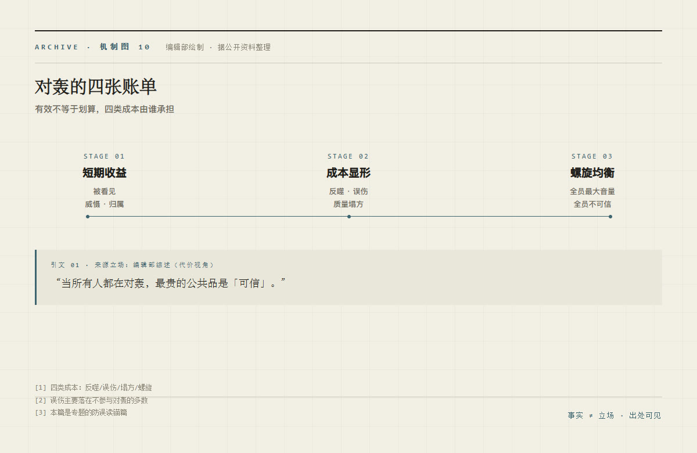

对轰有效，但账要算清
常态化观察 · 之三 · 代价篇。本篇存在的唯一目的：防止专题被读成行动指南。
上一篇拆了对轰的机制，结尾立了条规矩：理解它、不美化它。本篇是那条规矩的执行件——把成本面单独拆开、拆透。为什么必须单独立一篇？因为机制拆解天然有一种危险：把「有效」写得太清楚，读者就会把它读成「值得」。对轰确实有效，但「有效」和「划算」之间隔着四张账单。这四张账单，大部分不由发起对轰的人付。
用规则打规则的人，从出手那一刻起也站在规则里。镜像动员的每一项技术——挂人、做合订本、举报、挖旧账——都可以原样打回来。对轰的双方共享同一套武器库，这意味着没有人有安全屋。更结构性的是：对轰场里存在「随机降火」——平台整治、算法调整、热点转移，随时可能把你从攻击方变成清理对象。你以为你在使用工具，其实你在工具的作业面上[1]。
还有心理层面的回旋镖。长期用「代价展示」型策略（以伤害为语言）的人，会逐渐把「让对方疼」内化为沟通的默认手段——这不分性别，是策略对使用者的反向塑造。骂战里长大的表达者，回到日常对话时也带着骂战的句法。武器改变持枪的人。
这是四张账单里最大、也最容易被忽略的一张。对轰的火力覆盖是按标签、不按个体的：男性标签、女性标签、地域标签、职业标签，一枚导弹覆盖几十万人。绝大多数人不参与对轰——他们只是带着这个标签在过日子——但他们要在评论区、相亲市场、职场语境里反复中弹。「男的都这样」「女的都这样」的扫射里，躺着的全是没上场的人[2]。
误伤还有一层时滞：今天在对轰里被羞辱的标签，明天会成为他孩子、他同事、他伴侣身上的预设。公共语言的污染是存量资产——一句「男的不配」在戏谑语境里无害，进入语料库之后就是默认前提的候选（见篇 08）。对轰双方共同完成这项污染，只是各自以为自己在写判决书。
本篇在此处必须停一下，防止又滑向单方叙事：误伤账单两个方向都在开。男性标签下的扫射伤害普通男性，女性标签下的扫射同样伤害普通女性——「女的都在卖惨」「小仙女」这类反向标签，和「男的都家暴」一样，都是对轰的产物而非解药。本专题从头到尾不换靶子，这里也一样。
引文 01 · 来源立场：编辑部综述（代价视角）
"当所有人都在对轰，最贵的公共品是「可信」。"
—— 本篇的结构性概括（编辑部综述，非文献原文）。立场：公共品视角。
账单三是讨论质量塌方。规则层作战一旦成为默认战术，事实层的公共品就没人生产了：核查报道成本高、回报低，长文分析没人读完，程序文书没人转发——这些「慢内容」是公共讨论的基础设施，它们枯竭之后，所有议题都只剩立场对射。塌方的受害者是所有人，包括对轰的赢家：赢下一百场骂战，换不来一个可信的结论。
账单四是螺旋升级。对轰的每一次「成功」都在给对手演示：温和没有用，只有更狠有用。于是均衡点不断上移——今天挂人，明天挖三代，后天线下；今天玩梗，明天开盒。这是一个标准的军备竞赛结构，没有哪个单方能退出：谁先克制谁吃亏。最终的均衡画面很清晰：所有人用最大音量说话，所有人的话都不可信。[3]
四张账单摆完，本篇的立场可以落成一句硬话：对轰是止痛药，不是治疗方案；止痛药值得理解，不值得推广。有人会问：照你这么说，被结构性闭嘴的人就该忍着？不——这正是专题剩下的四篇要回答的问题。先把账算清，再谈别的；算不清账的「反击」，最后都会变成自己反对的那种暴力。
再敲一次防误读的钉子：如果你读完篇 09 觉得很爽，读完本篇觉得扫兴——这个「扫兴」就是本篇的功能。专题不提供爽感，提供账本。

▲ 图 10：对轰的四张账单 · 编辑部绘制。分类见注 [1][2][3]。
注 · SOURCES
[1] 「反噬」「随机降火」为机制比喻，指策略使用者承受同规则回击的风险；无公开统计。
[2] 「误伤按标签不按个体」为机制观察；扫射伤害在两个方向上都发生，本文并陈。
[3] 「军备竞赛」「全员最大音量均衡」为博弈论比喻层面的分析性判断，非实证预测。
[4] 四张账单为本文的分析框架（反噬 / 误伤 / 塌方 / 螺旋），系类型化归纳。
口径说明
本文为社会学观察，不站任何性别立场，作者性别不作为论证依据。本篇是防误读锚篇：对轰有效但不划算，不构成行动指南。误伤账单双向并陈，不换靶子。拆解机制是为了理解，不是教人操纵舆论。
出口：四张账单里唯一能被制度直接削减的是账单三（塌方）——给事实层公共品以独立的分发与激励（核查稿的等权重传播、慢内容的流量保底）。账单二（误伤）只能靠表达纪律，账单一、四只能靠收益表整体改写。从能动手的地方开始，别等全赢。